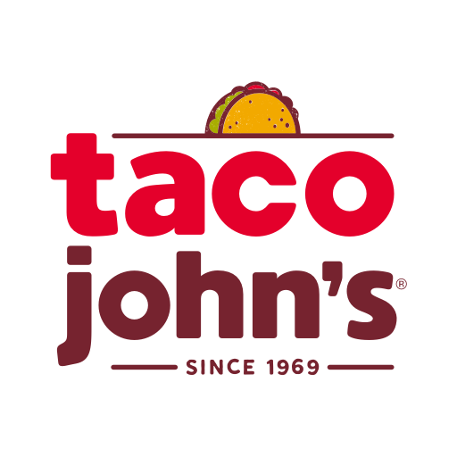
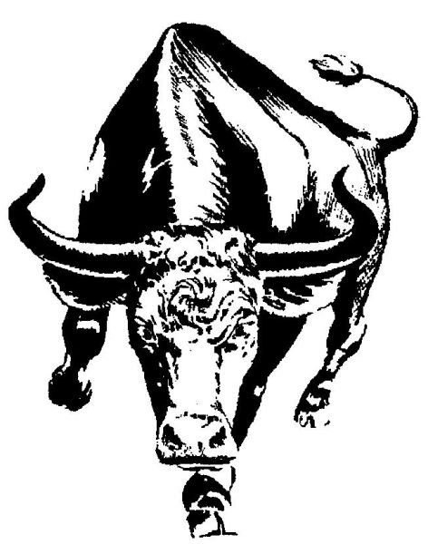

Image by Northwest Missouri State University via https://www.google.com /url?sa=i&url=https%3A%2 F%2Fwww.nwmissouri.edu %2Fmarketing%2Fdesign %2Flogos.htm&psig=AOvVaw 27j27weHzljVLuvW1 GXFyf&ust=166683412 7538000&source=images&cd=vfe&ved= 0CAwQjRxqFwoTCKC7wZXf_PoCFQ AAAAAdAAAAABAD
March 2021 - Present
- Northwest Missouri State University | Finance and Administration | Grant Administrative Clerk
- I currently work in the Finance Office and have been in this office for a year. My duties include sending and distributing mail, managing and organizing confernce room schedule, and filing and review documents for grants and contracts.
- Northwest Missouri State University | Student Account Services | Billings/Collections Office Assistant
- I worked in the Student Account Services Office for about a year. My duties included answering questions about student and faculty/staff accounts and communicating with students about past due account balances.
- Northwest Missouri State University | Cashiering Office | Cashiering Office Assistant
- I worked in the Cashiering Office for six months. I operated the cashiering window, collecting payments, balancing drawers, and analyzing accounts.

Image by Taco John's via https://www.google.com /url?sa=i&url=http%3A%2F%2F cheyennechamber.chambermaster. com%2Flist%2Fmember%2F taco-johns-international- inc-1760&psig=AOvVaw 2xFvLaHWxi2yvfanW2tk -G&ust=1666834028838000& source=images&cd=vfe&ved =0CAwQjRxqFwoTCIDtvOTe_ PoCFQAAAAAdAAAAABAP
May 2020 - Novemeber 2020
- Taco John's | Shift Leader
- I worked for Taco John's for about five months. My duties while there included collecting payments and returning the correct change, ensured customer satisfaction, and worked with a team, quicly became leader of the team.

Image by South Nodaway via https://www.southnodaway.k12.mo.us/vnews/display.v/ART/4a9d4ed9e8045
Summer 2018, Summer 2019
- South Nodaway | Summer Worker
- I worked two summers for my former high school, South Nodaway. I was involved in teamwork to complete the cleaning and organizing of the school.